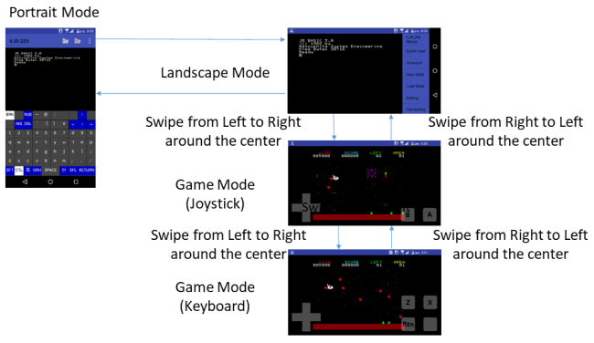

VJR-200 for Android is an emulator of Panasonic JR-200 (Japanese model). However, some of JR-200U software work with VJR-200. English menu and message are available.
VJR-200 for Windows is here.
JR-200 emulator running on Android 4.1 to 10 (Android 4.4 or
above is
recommended).It doesn't work on Android 11.
The vertical screen is intended to be used alone, the
horizontal screen is intended to be used in combination with an external
keyboard, or used for games.
Operation Environment
Download
Preparation
Execution
Operation
DirectPlayer
Notes
The following software was used for VJR-200 for Windows based on the bsd 3 clause license.
MAME (http://www.mame.net/)
copyright-holders: Nicola Salmoria, Aaron
Giles
cereal (https://uscilab.github.io/cereal/)
LICENSE
copyright-holders: Randolph
Voorhies, Shane Grant
Icons from FLAT ICON DESIGN (http://flat-icon-design.com/)
Android 4.1 to 10 (confirmed with version 4.4, 5.1, 6.0, 10.0 on the actual device)
Below Android 4.4, some functions may be limited, and performance may be degraded in game mode.
Permission for installation or execution is storage read/write and vibration and audio recording. If you refuse storage read/write, you cannot execute. Unless you use Direct Player, you can refuse audio recording.
The update simply installs over the new apk file. Settings should be inherited as they are.
Compatible with Bluetooth and USB external keyboards (Japanese keyboard only). If you are having difficulty entering, try changing the Japanese input software (Google Japanese Input -> Gboard, etc.).
Not compatible with game controllers.
* VJR-200 for Android is not an app registered on Google Play.
* This program has not been fully verified. I do not intend to have a harmful effect on the user environment, but I will not compensate for any damage. Please use it after understanding.
The Android version source code will not be released.
* APK Binary https://github.com/find-jr200/VJR200forAndroid/blob/master/vjr200-0.6.3.apk (3,995KB)
Prepare the ROM and font files and transfer them to your smartphone along with the CJR and JR2 files you want to execute. As there are restrictions on the transfer destination, refer to the notes.
Unlike the Windows version, the BREAK key when using an external keyboard is assigned to F11. This is because the Esc key has been used by the OS.
If you have a type that can be switched for each OS, such as a Bluetooth keyboard, try using Windows settings. With the Android settings, the operation of the function keys may not be what you intended.
* * * * *
VJR-200 for Android has 4 modes. Each transition is as follows.

Direct Player is a utility that can play CJR and JR2 files directly without converting them to WAV files. It has nothing to do with the emulator.
To use the direct player, you must give it the permission of "Record Voice". This is the permission to display the playback waveform (Visualizer), not to record your sound of life.
Be sure to try setting the volume to maximum. It seems that there are still many models that cannot obtain the required volume, but in that case, there is no choice but to use a headphone amplifier.
Turn on Blank Extension to extend the blanks recorded in the JR2 file to 5 seconds. Use this when a blank recorded in advance cannot be loaded normally. However, it cannot be expanded unless blanks are recorded in the original file. In that case, recreate the JR2 file.
[TOP PAGE]